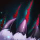
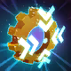

SKILL 01 • ULTIMATE
Go for It, Lucas!
Lucas begins battle with 25% rage. Every attack from Astrid generates another 25% rage. At 100%, Astrid can activate her ultimate and send Lucas into raging form on the front line.
While raging, Lucas uses his rage meter instead of conventional health. Each enemy hit removes 7% rage, regardless of how much damage that individual hit would normally cause.
When the rage meter reaches zero, Lucas returns to his passive form and the cycle begins again. Lucas does not use conventional energy, cannot be debuffed and has zero Armor and Magic Defense.
SIGNATURE MECHANIC: Lucas can absorb powerful individual attacks without losing extra rage. Repeated hits are what deplete his meter.
Astrid increases her attack and skill speed for nine seconds. This improves her offensive rhythm and supports faster rage generation.
If Lucas is already in raging form, the benefit applies to Lucas instead. He also receives the effect when transforming.
KEY MECHANIC: This ability helps accelerate attacks and strengthens the duo's battle rhythm.

SKILL 03
Predator's Charge
While in raging form, Lucas increases the damage of his consecutive attacks.
Each consecutive attack increases damage by 6.5%, rewarding sustained attacking and extended frontline activity.
TIMING MATTERS: The longer Lucas remains active and attacking, the more valuable his consecutive damage becomes.

SKILL 04 • PASSIVE
Tracker's Mark
Astrid marks enemies she attacks for four seconds.
When Lucas attacks a marked target, he briefly stuns that enemy. This adds a control mechanic to the duo's physical damage and frontline presence.
CONTROL MECHANIC: Astrid marks the target; Lucas follows up with a stun.